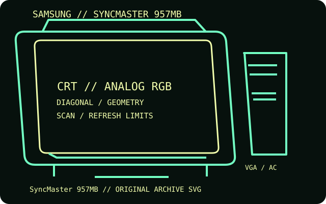

[ INDIVIDUAL COMPONENT // DISPLAYS ]
Samsung SyncMaster 957MB
A 19-inch-class Samsung multiscan color CRT monitor with analog VGA connection and on-screen image controls.

IDENTIFICATION: Match the complete model and regional suffix on the rear label. Published CRT timing limits do not guarantee a particular used unit's condition; verify the tested host, cable and displayed mode.
Specifications
| Catalog subcategory | CRT displays |
|---|---|
| Exact product / family | Samsung SyncMaster 957MB |
| Tube diagonal & image geometry | 19-inch nominal shadow-mask tube with approximately 18-inch viewable image; 4:3 picture. On-screen adjustment covers horizontal/vertical size and position, pincushion and related geometry. |
| Resolution & refresh | Supports up to 1600 × 1200; common mode tables rate 1280 × 1024 at 85 Hz and 1600 × 1200 at 75 Hz. Refresh is mode-dependent and subject to the monitor's scan limits. |
| Video inputs | 15-pin D-sub VGA analog RGB input. The USB/power-management functions are not video inputs; this model does not accept HDMI or DVI. |
| Power | AC 100–240 V, 50/60 Hz; rated maximum consumption approximately 120 W, with reduced VESA DPMS draw in suspend/off states. Confirm the exact nameplate on the regional unit. |
| Host compatibility | Use with analog VGA output from a PC or Mac; select a mode in the monitor's supported range. A digital-only host requires an active digital-to-VGA adapter and may not support the full timing range. |
Identification and compatibility notes
Samsung sold similar 957-series and 955-series models; use the full 957MB suffix from the rear label rather than assuming sibling specifications.
Record the rear-label model, regional voltage rating, video connector used, source timing, adapter chain, visible image area and geometry/convergence condition. CRTs contain hazardous high-voltage circuits and heavy components; internal service belongs to qualified technicians.
Manufacturer documentation and sources
- Samsung — SyncMaster 957MB user manualModel-specific manual, modes and power-saving guidance.
- Samsung — SyncMaster 957MB manual catalogIndependent manual catalog for the exact 957MB model.